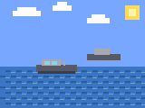

US boat strike in the Caribbean kills four, taking the campaign to about 70 strikes and 235 dead
4 killedCaribbean Sea
SOUTHCOM said Joint Task Force Western Hemisphere hit a go-fast boat in the Caribbean on Oct. 4, killing four; no evidence of drugs aboard or the victims' identities was released. It was the first strike since the UN's Ben Saul said on Sept. 20 there were reasonable grounds to see the campaign as extrajudicial killings. CBS counts at least 235 dead in 70 strikes since September 2025, while UPI tallies 71 strikes and 238 dead, and the ACLU is pursuing a case alleging some victims were fishermen and farmers.
